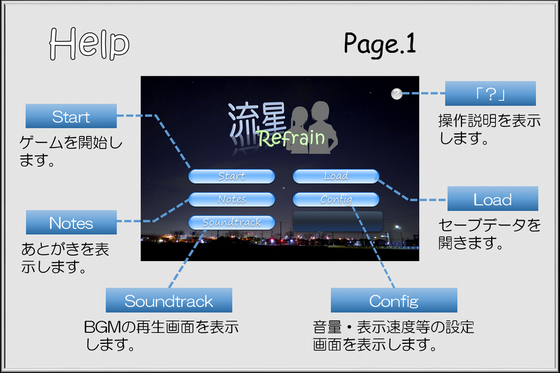
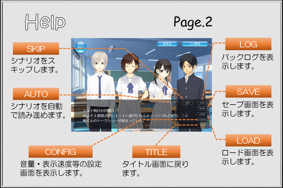
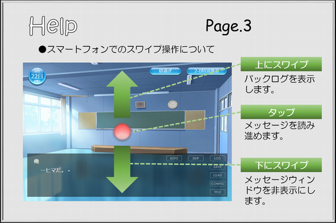
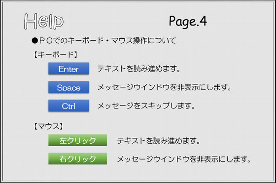
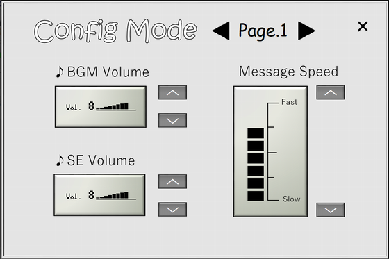
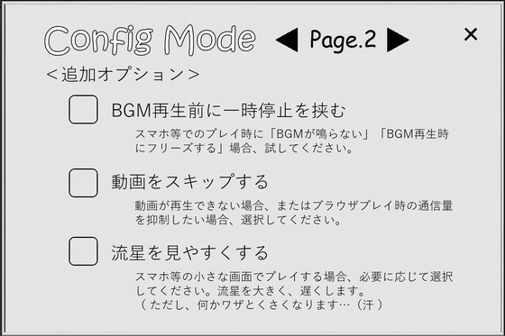

■ タイトル画面 ■

| ●ボタン類 | |
| 【 Start 】 | シナリオの最初から始めます。 |
| 【 Load 】 | セーブデータを開きます。 |
| 【 Config 】 | 設定画面を開きます。 |
| 【 Notes 】 | あとがきを開きます。 |
| 【 Soundtrack 】 | BGM鑑賞モードを開きます。 |
■ ゲーム画面 ■

| ●ボタン類 | |
| 【 AUTO 】 | シナリオを自動で読み進めます。 |
| 【 SKIP 】 | シナリオをスキップします。 |
| 【 LOG 】 | バックログを表示します。 |
| 【 SAVE 】 | セーブ画面を開きます。 |
| 【 LOAD 】 | ロード画面を開きます。 |
| 【 CONFIG 】 | 設定画面を開きます。 |
| 【 TITLE 】 | タイトルに戻ります。 |
|
※メモ 【AUTO】【SKIP】を解除するには、 画面のどこかをクリック／タップしてください。 【TITLE】でタイトルに戻る際、記録は残りません。 事前にセーブを取ってください。 |
|

| ●タッチ操作（スマホの場合） | |
| 【 タップ 】 | メッセージを進めます。 |
| 【 上スワイプ 】 | バックログを表示します。 |
| 【 下スワイプ 】 | メッセージを非表示にします。 |

| ●キーボード・マウス操作（ＰＣの場合） | |
| 【 Enterキー 】 | シナリオを進めます。 |
| 【 Spaceキー 】 | シナリオを非表示にします。 |
| 【 Ctrlキー 】 | シナリオをスキップします。 |
| 【 左クリック 】 | シナリオを進めます。 |
| 【 右クリック 】 | シナリオを非表示にします。 |
■ 設定画面 ■

| ●１ページ目 | |
| ♪BGM Volume | ＢＧＭの音量を調整します。 |
| ♪SE Volume | 効果音の音量を調整します。 |
| Message Speed | 文字の表示速度を調整します。 |

| ●２ページ目 |
|
動作に関する追加オプションです。 基本的に不都合が無ければ使用する必要はありません。 もし「うまく動かない」「見づらい」等があればお試しください。 |
| ■BGM再生前に一時停止を挟む |
|
特にブラウザ形式でプレイする際、Webブラウザによっては BGMの再生時にゲームが止まってしまうことがあります。 このオプションをONにすると、BGM再生前にメッセージ「…。」 を表示してクリック待ちを入れることで、上記を回避します。 |
| ■動画をスキップする |
|
本作はオープニングやエンディングで動画ファイルを再生します。 通信環境やスペックによっては再生が苦しい可能性もあるので、 再生したくない場合はこのオプションをONにしてください。 |
| ■流星を見やすくする |
|
本作のシナリオ中で、流星が何回か表示されるのですが、 特にスマホ等の小さい画面でプレイする場合、細かくて見づらい かも知れません。 このオプションをONにすると、流星が大きくなります。 また、流星の動きも遅くなります。 何か安っぽさが増しますが、これなら見えるでしょ…？（汗 |